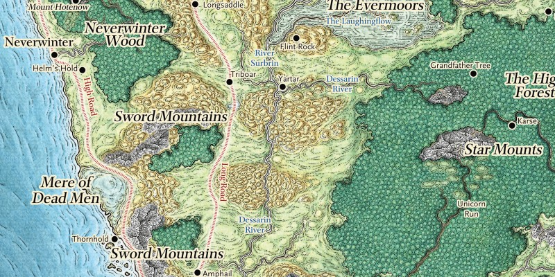

Le Nord et la Côte des Épées
Longeant la mer des Épées et celle des Glaces flottantes, la Côte des Épées est une étroite bande de terre dominée par les cités-états de la région et qui s'étend de Neverwinter jusqu'à la Porte de Baldur au sud. Le Nord désigne pour sa part tout le territoire au nord de l'Amn, divisé en deux grandes régions : les contrées du Mitan occidentales et la Frontière sauvage.
Au-delà des diverses nations et zones géographiques (les contrées du Mitan occidentales, la Frontière sauvage et les Royaumes insulaires) qui forment ces deux grandes régions, le Nord et la Côte des Épées se définissent également par les pouvoirs qui les composent. Ainsi, quand on parle du Nord et de la Côte des Épées, on se réfère avant tout aux organisations suivantes :
L'Alliance des seigneurs
{kind=link}
Le Nord et la Côte des Épées (10200 x 6600 - 26 Mo)
Comme son nom l'indique, l'Alliance des seigneurs n'est pas une nation, mais une alliance de plusieurs cités du Nord formée il y a un peu plus de 150 ans pour préserver la civilisation dans cette région. En voici les 10 membres actuels :
Amphail. Petite ville de 700 âmes, Amphail est réputée pour ses élevages de chevaux. Les trois principales familles nobles qui l'ont fondée, qui y possèdent des terres et qui s'y affrontent, proviennent de Waterdeep, et ses habitants ont tendance à être suspicieux vis-à-vis de ceux qui montrent des signes de richesse.
Castelmithral. Bien que membre de l'Alliance des seigneurs, Castelmithral est avant tout une cité naine. De fait, sa description se trouve dans le chapitre sur les forteresse naines du Nord.
Gué de la dague. Dame Morven Gué de la dague, la duchesse qui vit dans le château qui surplombe cette petite ville de 1200 habitants, en comptant les fermes alentours, est une personne compétente et charismatique. Les terres agricoles de la région sont un véritable havre de paix et de nombreuses caravanes qui se dirigent au nord vers Waterdeep ou au sud vers la Porte de Baldur passent par ici. La vie du village est supervisée par le conseil des Guildes et on y trouve un petit temple de Tempus.
Carte interactive des
Royaumes Oubliés D&D 5
Longueselle. Ce qui n'est qu'un hameau est le siège de la puissante famille de magiciens des Harpells, et de leurs apprentis, depuis plus de quatre cents ans. Toutes les maisons autour de leur manoir sont des fermes, et on relate que quelques lycanthropes s'attaquent à leurs animaux de temps en temps.
Lunargent. La perle du Nord est une ville tranquille et très civilisée où toutes les races sont représentées, mais à l'influence elfe évidente, au moins dans son architecture. Des temples à Mailikki, Oghma, Sylvanus, Sunie, Tymora et Mystra y sont présents. Depuis le Haut Palais le seigneur demi-elfe Methrammar Aerasume dirige la cité, lequel peut compter sur ses Chevaliers en Argent et les nombreux magiciens et ensorceleurs de la cité pour la défense des murs. Les Ménestrels sont également très présents à Lunargent.
Mirabar. Riche ville fortifiée majoritairement humaine en population, on y trouve toutefois également des gnomes et halfelins, mais surtout toute une colonie de nains dans les cavernes sous terre. De fait, tous les habitants de Mirabar, quelle que soit leur race, vénèrent Moradin, faisant de cette cité une cité naine au moins dans l'esprit. Le conseil majoritairement nain des Pierres Pétillantes, avec à sa tête Selin Raurym, fixe la politique de la ville, et principalement à qui seront vendu les minéraux extraits des mines, lesquelles sont protégées par la Hache de Mirabar, la garde de la cité.
Carte interactive de Neverwinter
Neverwinter [Padhiver]. Le chaos qu'a affronté la cité il y a environ un demi siècle après l'explosion du volcan du mont Chaudenow, fait partie du passé maintenant. La Grande Route a été reconstruite et Neverwinter a renoué avec le commerce, principalement avec Waterdeep et les villes du sud. La cité est redevenue une ville attrayante, avec à sa tête son Seigneur Protecteur, Dagult Longuebraise [Neverember], ancien dirigeant de Waterdeep. De nombreux aventuriers viennent à Neverwinter chercher du travail, que ce soit pour participer à nettoyer certains recoins de la ville encore dangereux ou pour protéger des caravanes. Le Gouffre qui déchirait le sud-est de la cité a été scellé par une puissante magie, laissant une vaste étendue vide sans bâtiment.
Carte interactive de
la Porte de Baldur
La Porte de Baldur. Avec ses dizaines de milliers d'habitants, la Porte de Baldur est une grande ville portuaire et commerçante dirigée par les ducs du Conseil des quatre. L'actuel grand duc, élu parmi ces quatre et qui a la fonction de départager les situations bloquées, se nomme Ulder Gardecorbeau [Ravengard]. Ce conseil est secondé par le Parlement des pairs. La défense de la Cité haute, où logent les nobles, les patriars, est assurée par la Veille, les forces de l'ordre officielles. Dans le reste de la ville, la Cité basse, c'est la compagnie de mercenaires du Poing enflammé qui s'en charge avec brutalité. Plusieurs portes séparent la Cité haute et la Cité basse. Une organisation qu'on appelle la Guilde contrôle les bas fonds de la cité. Tous les efforts pour détruire cette organisation ont jusque-là été vain. Hors des murs de la cité se trouvent les plus pauvres et les activités considérées comme trop gênantes ou trop bruyantes.
Carte interactive de
Waterdeep
Waterdeep [Eauprofonde]. La cité des splendeurs est une grande ville, riche, puissante et stable. Les commerçants y trouvent de tout pour acheter ou vendre, les aventuriers n'auront que peu de mal à y trouver du travail. Une femme est à sa tête, dame Laeral Maindargent, en tant que Seigneur manifeste [Open Lord] de Waterdeep, et accompagnée dans sa tache par les Seigneurs masqués. Plus de 75 familles de nobles se réclament de Waterdeep et y nourrissent des intrigues, mais dans une ambiance toujours civilisée.
Yartar. Ville fortifiée de pêcheurs et de constructeurs de péniches, Yartar est avant tout connue pour ses foires d'embauche durant l'été. A ce moment toute sorte de personnes (bandits, mercenaires, brutes, voire même quelques barbares) se retrouvent en ville à la recherche d'un travail comme garde, guide, ou toute autre activité un peu physique. Le pouvoir en ville est personnalisé par la baronne Nestra Ruthiol, femme au fort caractère, et ses Boucliers de Yartar, des gardes montés qui entre autres protègent la ville des raids uthgardt. La guilde de voleurs locale se fait appeler la Main de Yartar.
Les forteresses naines du Nord
Les nains sont présents dans le Nord depuis plus de 6000 ans et y ont fondé au fil du temps plusieurs royaumes, dont le plus grand et le plus récent fut sans aucun doute celui de Delzoun. Et bien que ce nom n'évoque maintenant plus qu'une gloire passée, de nombreuses cités et forteresses d'aujourd'hui en sont l'héritage.
Castelmithral. L'actuel roi de Castelmithral, qui plus qu'une ville est en fait une mine, est une naine, la général Dagnabbet Waybeard, et la célèbre brigade des Gutbuster en constitue la troupe d'élite. Les étrangers sont hébergés au niveau supérieur, les mines sont interdites aux visiteurs et la ville inférieure est interdite aux non-nains.
Citadelle Adbar. Vieille de 1800 ans, et dernière des forteresses du royaume de Delzoun, Adbar ressemble plus à une montagne qu'à un château, et suite à la dernière guerre contre les orcs de Mille-Flèches [Many-Arrows], les nains d'Adbar sont encore plus réticents qu'avant à ouvrir leurs portes aux étrangers. Le roi Harnoth, qui a justement perdu durant cet épisode son frère jumeau des griffes d'un dragon, commande la garde d'Acier, l'armée de la citadelle. On y vénère bien entendu Moradin, mais l'accès à la forge est interdite aux étrangers, même s'ils sont nains.
Citadelle Felbarr. La citadelle de Felbarr a été construite il y a plus de 3000 ans, mais a ensuite été abandonnée quand les filons de la mine autour de laquelle elle fut construite s'épuisèrent, puis fut même occupée par des orcs durant plus de 300 ans. Mais en 1367 CV les nains reprennent leur citadelle.
Gauntlgrym.
Ironmaster.
Sundabar. Tout comme Mirabar, Sundabar a été fondée par les nains et une ville humaine s'est ensuite installée en surface. Puis, petit à petit, les guildes et les commerçants humains en ont pris le pouvoir. Mais dernièrement la cité est tombée aux mains des orcs et les dommages ont été terribles pour les habitants en surface, qui ont tous dû fuir. C'est alors que, après s'être barricadés, les nains sont montés à la surface et ont repris la ville, faisant maintenant de Sundabar une ville entièrement sous le contrôle des nains, dans sa totalité, et en reconstruction. Le Maître des Forges est le leader de Sundabar, qui se refuse toujours pour le moment à choisir un roi.
Gardépine.
Les Royaumes Insulaires
À l'ouest de la Côte des Épées se situent de nombreuses îles de diverses tailles qui commercent ou font la guerre, avec Faerûn ou entre elles. Au sud vivent les Ffolk, des humains dirigés par leur Grand Roi, Derid Kendrick, depuis sa forteresse sur Alaron. Et au nord se trouvent les Northlanders.
Mintarn. Mintarn est depuis très longtemps un territoire neutre qui accueille de la même manière les navires pirates et les bateaux marchands. Dernièrement, un dragon rouge du nom de Hoondarrh semble s'être réveillé et demande un lourd tribu à l'île en échange de sa bienveillance envers ses habitants.
Les îles Moonshae.
Les îles du nord.
Orlumbor.
Les îles du sud.
Éternelle-Rencontre.

Écrit par blueace